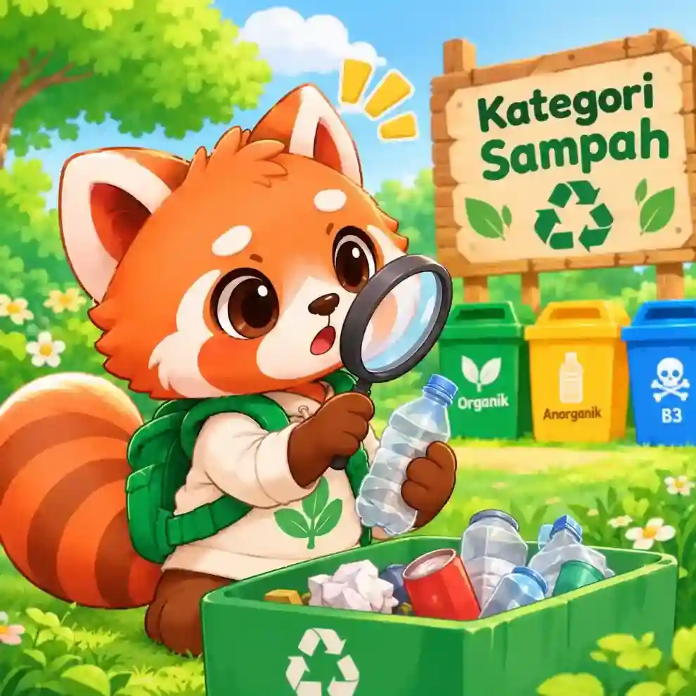
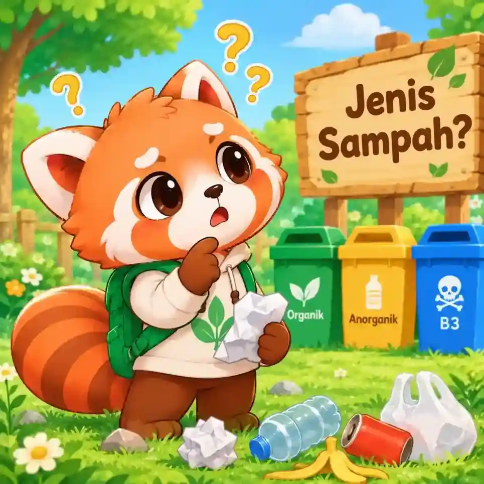

Belajar dan Mengenal
Kategori Sampah di PeduliSampah
Di halaman ini, kita akan belajar bersama untuk mengenal dan mempelajari 5 jenis sampah berdasarkan jenis nya dan cara menanganinya!

Rani's Tip:
Ayo kita belajar bersama mengenal jenis sampah!

Hmm, Rani belum menemukan sampah itu!
Coba gunakan kata kunci lain seperti "botol", "baterai", atau "kardus".